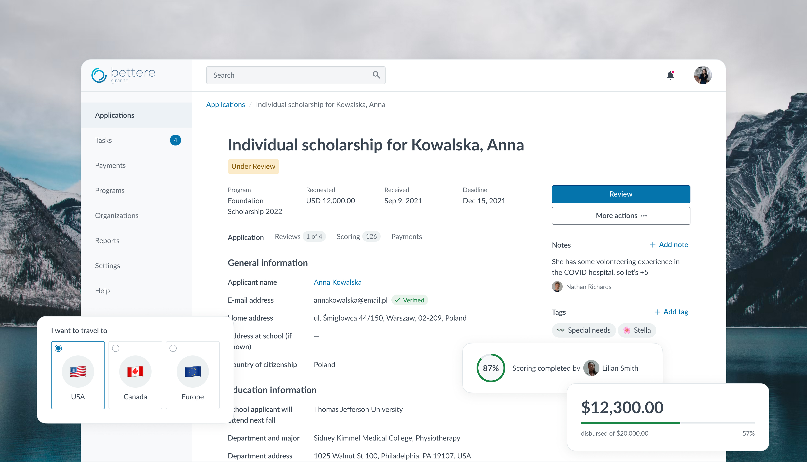
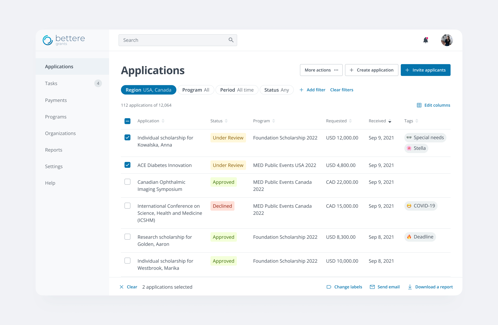
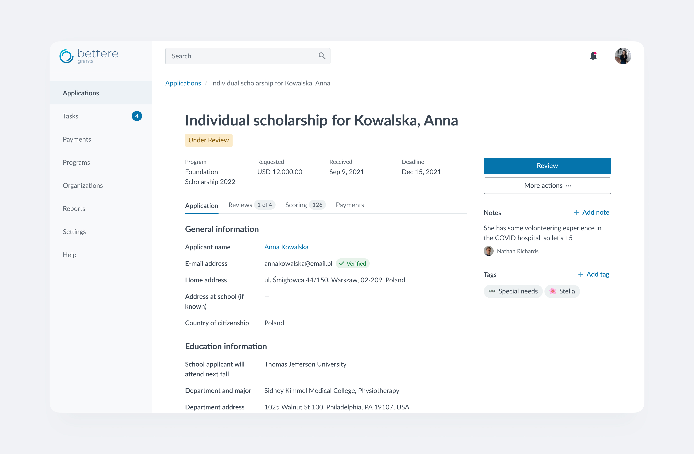
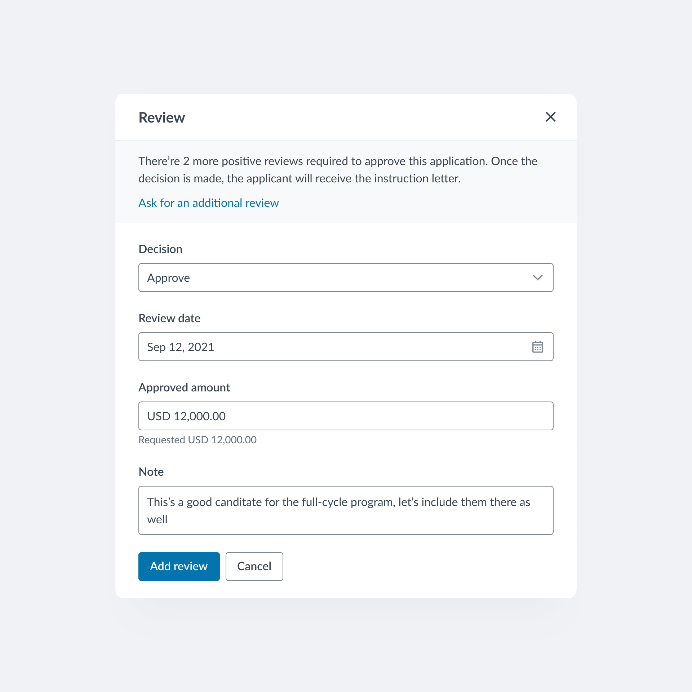
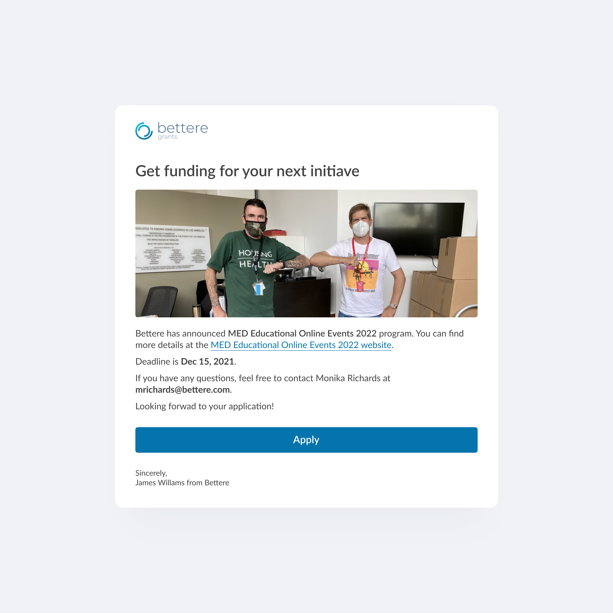
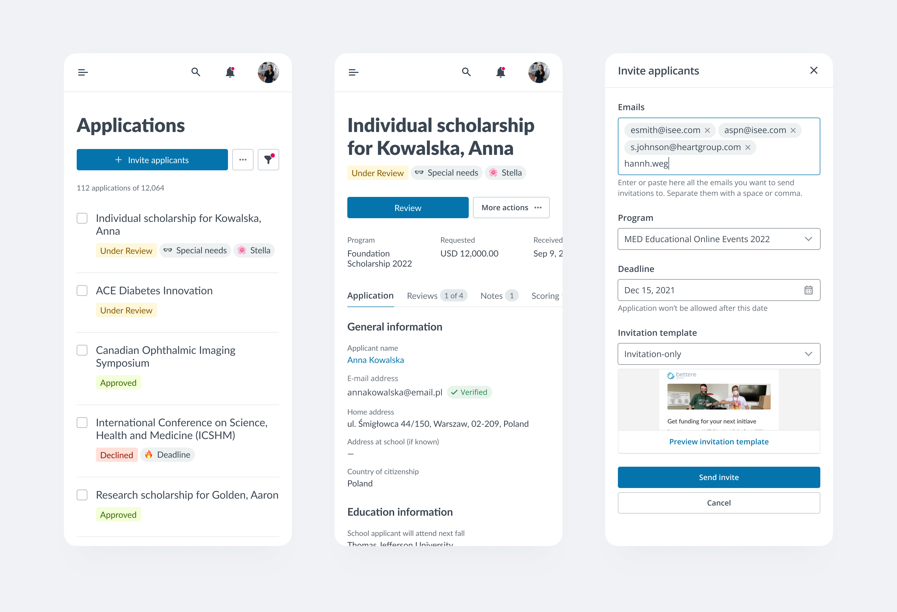
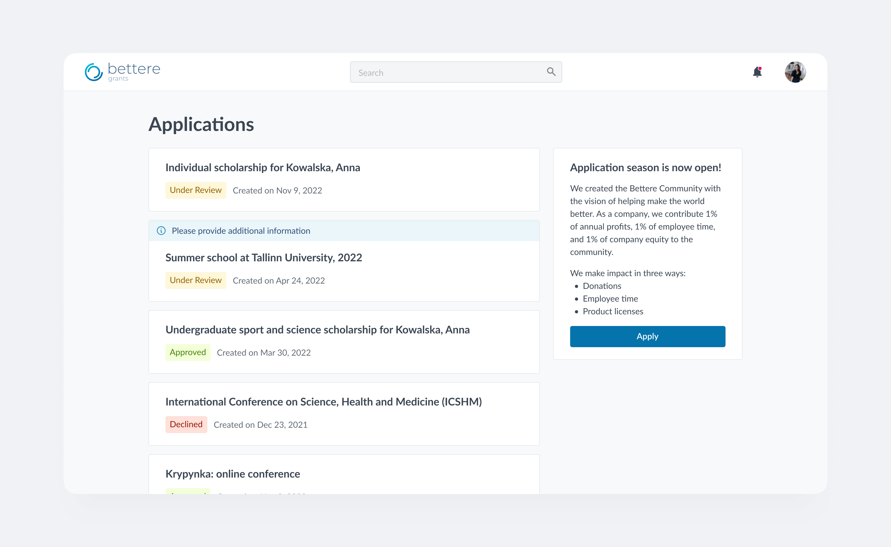
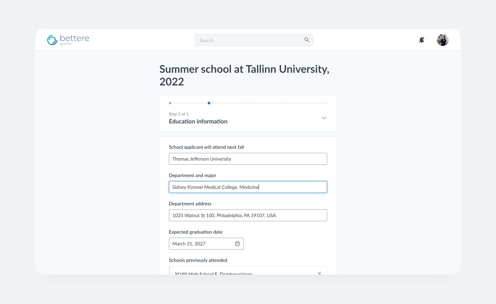
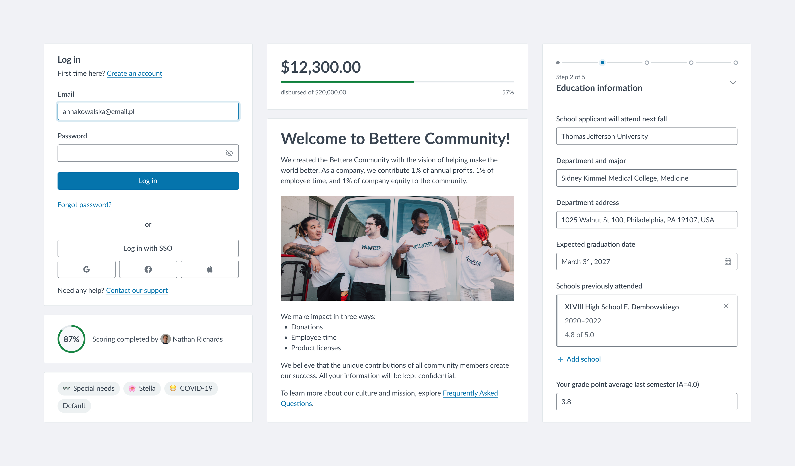

Grants management system
For four years, I contributed to the evolution of Versaic — a grants management platform used by organisations to manage funding programs, application workflows, and review processes.
After two years as an individual contributor, I transitioned into a managerial role, where I led a design team while continuing to shape product design direction and design operations.

Grants management portal
The administrator-facing platform supported complex workflows related to grant creation, application review, evaluation, and program management. My work focused on simplifying highly data-dense interfaces, improving consistency across modules, and introducing scalable interaction patterns that could support long-term product growth.





Applicant portal
The applicant portal was designed to help users navigate often complicated grant application processes with greater clarity and confidence. I worked on improving form structures, reducing friction in multi-step flows, and creating a more approachable experience for users with varying levels of digital literacy.


Design system
To support product scaling and reduce interface inconsistency, I established a reusable UI foundation consisting of shared components, layout rules, and interaction patterns. This system later became the basis for changing the design language after the product acquisition, enabling the product to evolve without a complete redesign.

Transition to the Lead UX designer & team lead role
After two years as the sole designer on the product, I transitioned into a design management role and built a small team of three junior designers. Alongside mentoring and team coordination, I introduced design processes, improved collaboration with engineering and product stakeholders, and ensured consistency of design quality across the growing product ecosystem.
I want to note Aleksandra’s professionalism and perfect knowledge of the project on which we worked. I have always received constructive feedback on my work which was crucial for my professional growth. UX/UI designer at Eurovensys
Accessibility
My interest in accessibility started while working on Versaic. I independently studied WCAG guidelines in depth, conducted my first accessibility audit for the Applicant Portal, and became an advocate for accessibility within the product team. I organised internal presentations explaining what accessibility is, why it matters, and which practical implementation techniques teams should consider during product development.
I strongly believe accessibility is not an “all or nothing” initiative. Even when large-scale refactoring was not feasible, I continuously improved accessibility on the design side by validating colour contrast, ensuring clear labels for interactive elements, and maintaining sufficient target sizes and usability standards.
After moving into a managerial role, I mentored designers on accessible design practices and accessibility auditing to help scale accessibility awareness and impact across the team.
Impact
Built a scalable UI foundation with reusable patterns and documented guidelines that supported long-term product growth.
Led the adoption of the design language and design system after product acquisition, integrating the product to the new owner's product line.
Introduced accessibility practices that helped to achieve ~87% WCAG 2.0 AA compliance.
Transitioned from sole designer to design manager.